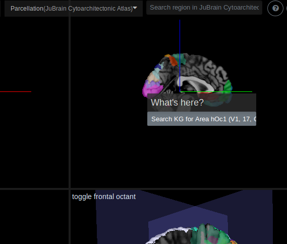

The interactive viewer is natively setup to query KG for any datasets related to specific parcellation area(s).
Single area search
To conduct a single area search, right click on any parcellation area. In the context menu, select Search KG for ... and a data browser window will be launched, fetching the dataset associated with this area.


Multi area search
To conduct a multi area search, double click as many areas as the search scope is desired. When the region selection is completed, right click the viewer and select Search KG for ... selected regions, similar to single area search, a data browser will be launched, fetching the dataset associated with all of the areas selected.